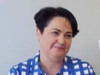

Who we are
Starlight's vision is that everyone experiences a happy childhood, because happiness matters.
Serious childhood illness doesn’t just impact a child’s health. It can turn their whole life upside down, causing them to miss out on spending time with their family, building friendships, going to school and just living their life.
Australia has one of the best healthcare systems in the world. But sick children and young people need more than the exceptional care that our clinicians can offer. They need the social and emotional support that lets them be a child.
This is Starlight’s job. For over 30 years we have used play, social connection and creativity to support children and young people in some of their toughest times and to positively change their healthcare experience.
We work alongside clinicians, wherever they go, from by the bedside in a major paediatric hospital to mobile clinics visiting remote communities. Working in partnership to deliver the best possible care for children and young people across the whole country, so that they can live their best lives.
Our People
"Shine brightness
for the sick kids."
Starlight team members come from all walks of life and share a common goal to bring happiness to seriously ill children and their families.
It’s what drives our actions every day and what makes Starlight such an inspiring and meaningful place to progress your career.
One of the best parts of being on the Starlight team? Seeing the impact we make every day.
Through our 'Get Connected' program, team members spend one day per quarter connecting with Starlight children and their families through our Starlight Express Rooms, Livewire or Wishgranting programs.
This guarantees that Starlight's mission is never far from our thoughts.
Together, our people create a vibrant and positive culture that recognises and celebrates growth and achievement.


and innovation.
delivering sustainable revenue growth.